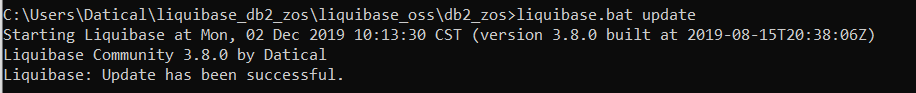

In the sql_files folder. This is the folder in which you will place SQL scripts that
The directory structure should look like this:
$LB_HOME/db2_zos/sql_files
This is a one-time step to configure a change log to point to the sql folder that will contain SQL scripts. Create and save a file in the $LB_HOME/db2_zos). The file should be named db2zosChangeLog.xml.
The contents of db2zosChangeLog.xml should be as follows:
<?xml version="1.0" encoding="UTF-8"?>
<databaseChangeLog
xmlns="http://www.liquibase.org/xml/ns/dbchangelog"
xmlns:xsi="http://www.w3.org/2001/XMLSchema-instance"
xsi:schemaLocation="http://www.liquibase.org/xml/ns/dbchangelog
http://www.liquibase.org/xml/ns/dbchangelog/dbchangelog-3.1.xsd">
<includeAll path="sql_files"/>
</databaseChangeLog>
With a db2zosChangeLog.xml, we are now ready to start adding SQL scripts to the sql_files folder.
Create a file named 001_create_person_table.sql with the following and save it in the sql_files folder:
create table PERSON (
ID int not null,
FNAME varchar(100) not null
);
We are now ready to deploy the script! Open a terminal and navigate to $LB_HOME/db2_zos. Run $LB_HOME/liquibase update if on a UNIX system or $LB_HOME\liquibase.bat update if on Windows.

You will see that your database now contains a table called PERSON.
You will notice two other tables are created as well:
The
Use can use command line arguments to over-ride the default options at runtime. The following are common command line arguments:
| Command Line Argument | Action |
|---|---|
--changeLogFile=<path and filename>
|
Specify the XML |
--url=<value>
|
Specify a database URL |
--defaultsFile=<path to file.properties>
|
Specify the properties file (default: ./liquibase.properties) |